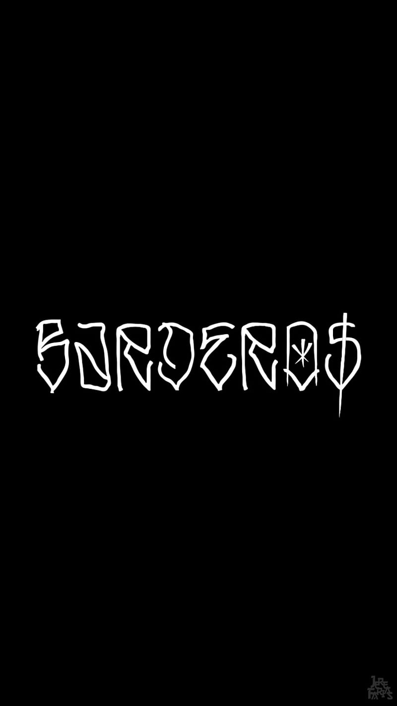

| Plantas | ||
|---|---|---|
| Inicio | Galeria | Contactos |
El vídeo proporciona una manera eficaz para ayudarle a demostrar el punto. Cuando haga clic en Vídeo en línea, puede pegar el código para insertar del vídeo que desea agregar. También puede escribir una palabra clave para buscar en línea el vídeo que mejor se adapte a su documento. Para otorgar a su documento un aspecto profesional, Word proporciona encabezados, pies de página, páginas de portada y diseños de cuadro de texto que se complementan entre sí. Por ejemplo, puede agregar una portada coincidente, el encabezado y la barra lateral. Haga clic en Insertar y elija los elementos que desee de las distintas galerías. Los temas y estilos también ayudan a mantener su documento coordinado. Cuando haga clic en Diseño y seleccione un tema nuevo, cambiarán las imágenes, gráficos y gráficos SmartArt para que coincidan con el nuevo tema. Al aplicar los estilos, los títulos cambian para coincidir con el nuevo tema. |  | |